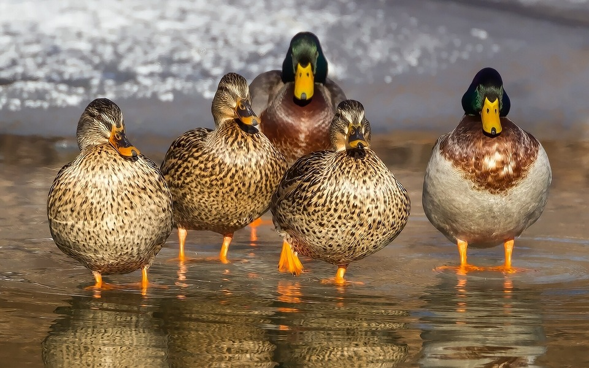

## Jonathan David James O'Neill 16435482
A brief collection of images of animals
Jonathan David James O'Neill
CSY1018 Resit Assignment
Bio
I decided to choose images of various animals from around the world that I found interesting or cute
These range from basic cats and dogs to sea birds and monkies
I am not very artistic and creative and this was the best I could come up with
